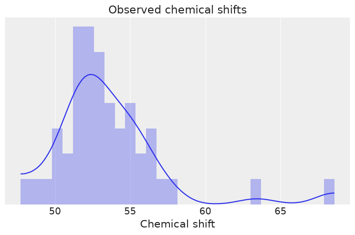
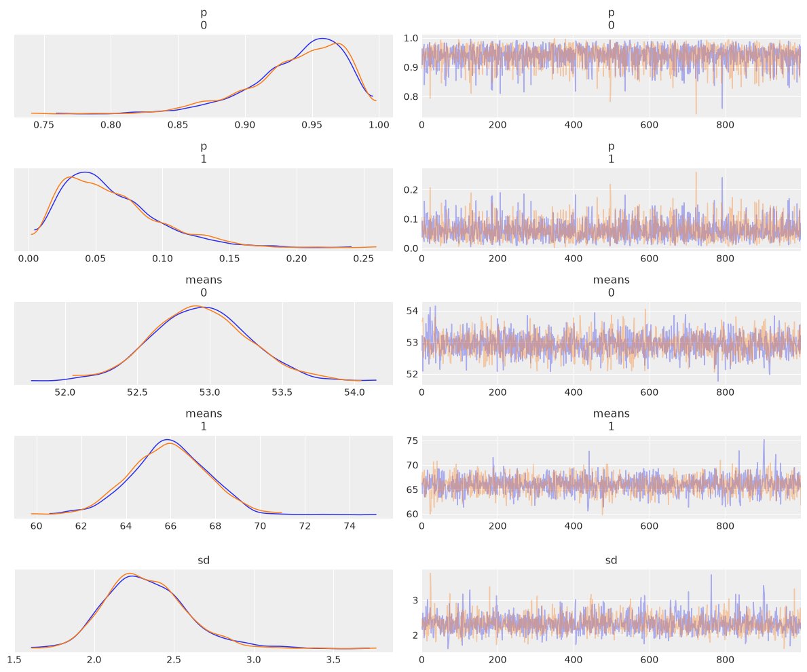
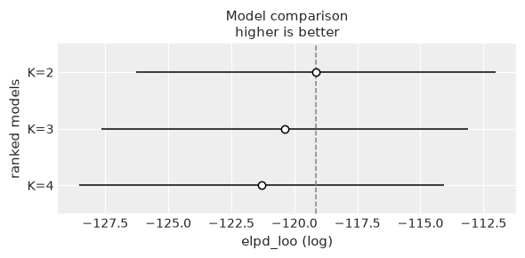
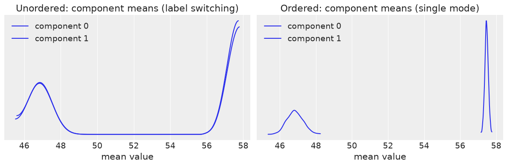
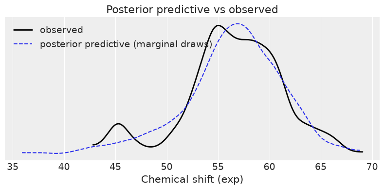
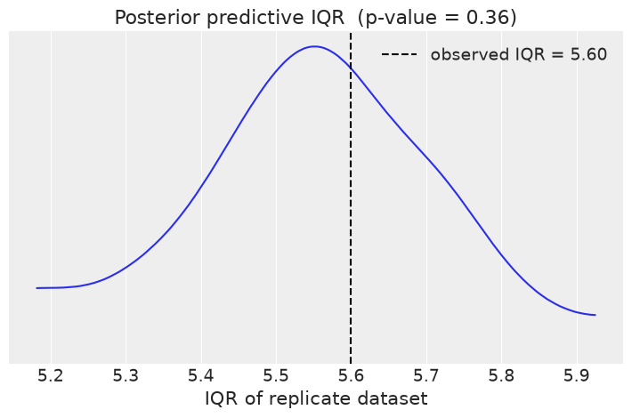
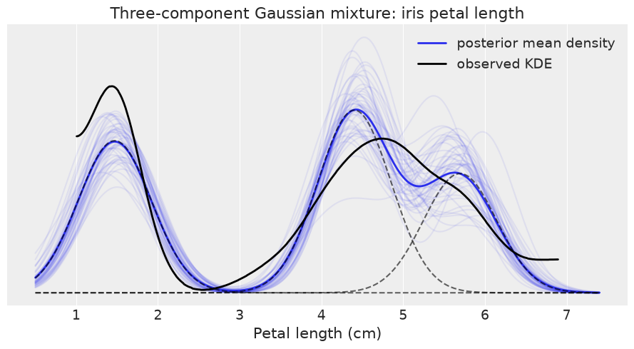
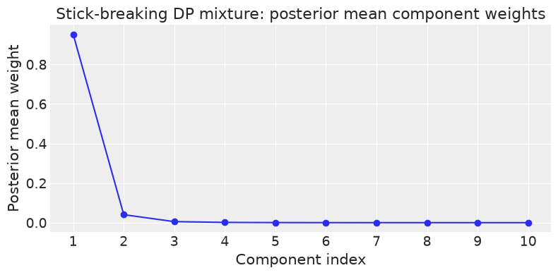

Chapter 6 Exercises#
Note: The BAP repository does not include published exercises for Chapter 6. The exercises below are practice problems authored in the style of the book, covering the same chapter themes (finite mixture models, the Dirichlet prior on mixture weights, label switching and non-identifiability, and continuous/Dirichlet-process style mixtures).
import os
import warnings
import arviz as az
import matplotlib.pyplot as plt
import pandas as pd
import jax.numpy as jnp
from jax import random, local_device_count
import numpyro
import numpyro.distributions as dist
from numpyro.infer import MCMC, NUTS, Predictive
from numpyro.distributions.transforms import OrderedTransform
seed = 1234
if "SVG" in os.environ:
%config InlineBackend.figure_formats = ["svg"]
warnings.formatwarning = lambda message, category, *args, **kwargs: "{}: {}\n".format(
category.__name__, message
)
az.style.use("arviz-darkgrid")
numpyro.set_platform("cpu") # or "gpu", "tpu" depending on system
numpyro.set_host_device_count(local_device_count())
/home/runner/work/bap-numpyro/bap-numpyro/.venv/lib/python3.13/site-packages/arviz/__init__.py:50: FutureWarning:
ArviZ is undergoing a major refactor to improve flexibility and extensibility while maintaining a user-friendly interface.
Some upcoming changes may be backward incompatible.
For details and migration guidance, visit: https://python.arviz.org/en/latest/user_guide/migration_guide.html
warn(
/home/runner/work/bap-numpyro/bap-numpyro/.venv/lib/python3.13/site-packages/tqdm/auto.py:21: TqdmWarning: IProgress not found. Please update jupyter and ipywidgets. See https://ipywidgets.readthedocs.io/en/stable/user_install.html
from .autonotebook import tqdm as notebook_tqdm
Exercise 1#
Load the chemical_shifts.csv dataset (the experimental chemical shift values, one column of floats). Fit a two-component Gaussian mixture model using MixtureSameFamily with a Dirichlet prior on the mixture weights. Use OrderedTransform on the component means to break the label-switching symmetry. Report the posterior means and 94% HDI for the weights p and component means. Why is the ordered-means constraint necessary, and what artefact appears in the summary when it is absent?
cs_raw = pd.read_csv('../data/chemical_shifts.csv', header=None, names=['shift'])
cs_obs = jnp.asarray(cs_raw['shift'].values)
print(f"N = {len(cs_obs)}, min = {cs_obs.min():.2f}, max = {cs_obs.max():.2f}, mean = {cs_obs.mean():.2f}")
az.plot_kde(cs_obs)
plt.hist(cs_obs, density=True, bins=30, alpha=0.3)
plt.yticks([])
plt.xlabel('Chemical shift')
plt.title('Observed chemical shifts')
plt.tight_layout()
N = 48, min = 47.72, max = 68.58, mean = 53.50
UserWarning: The figure layout has changed to tight

clusters = 2
def model_ordered(obs=None):
p = numpyro.sample('p', dist.Dirichlet(concentration=jnp.ones(clusters)))
c = dist.Categorical(probs=p)
# OrderedTransform forces means[0] < means[1], breaking label-switching
mu_init = jnp.linspace(cs_obs.min(), cs_obs.max(), clusters)
means = numpyro.sample(
'means',
dist.TransformedDistribution(
dist.Normal(mu_init, 10.0 * jnp.ones(clusters)),
OrderedTransform(),
),
)
sd = numpyro.sample('sd', dist.HalfNormal(scale=10.0))
component_dist = dist.Normal(loc=means, scale=sd)
numpyro.sample('y', dist.MixtureSameFamily(mixing_distribution=c, component_distribution=component_dist), obs=obs)
kernel = NUTS(model_ordered)
mcmc_ex1 = MCMC(kernel, num_warmup=500, num_samples=1000, num_chains=2, chain_method='sequential')
mcmc_ex1.run(random.PRNGKey(seed), obs=cs_obs)
idata_ex1 = az.from_numpyro(mcmc_ex1)
print(az.summary(idata_ex1, var_names=['p', 'means', 'sd'], hdi_prob=0.94))
az.plot_trace(idata_ex1, var_names=['p', 'means', 'sd'], compact=False)
plt.tight_layout()
mean sd hdi_3% hdi_97% mcse_mean mcse_sd ess_bulk \
p[0] 0.940 0.035 0.874 0.992 0.001 0.001 2309.0
p[1] 0.060 0.035 0.008 0.126 0.001 0.001 2309.0
means[0] 52.939 0.331 52.357 53.603 0.008 0.007 1525.0
means[1] 65.940 1.730 63.042 69.336 0.041 0.051 1904.0
sd 2.328 0.255 1.903 2.821 0.006 0.007 1786.0
ess_tail r_hat
p[0] 1398.0 1.0
p[1] 1398.0 1.0
means[0] 1350.0 1.0
means[1] 1300.0 1.0
sd 1403.0 1.0
UserWarning: The figure layout has changed to tight

Without OrderedTransform, HMC treats the two components as exchangeable. Because swapping component labels (component 0 gets mean A, component 1 gets mean B, or vice versa) leaves the likelihood identical, the sampler jumps between these equivalent modes. The trace plots show both chains exploring opposite assignments, and the summary reports an artificially inflated r_hat and low ess_bulk. Constraining the means to be ordered collapses both modes into one, so the sampler explores a unimodal posterior and diagnostics improve markedly.
Exercise 2#
Using the same chemical_shifts.csv data, fit three separate mixture models with K = 2, 3, and 4 components respectively, each with an ordered-means prior. Convert each MCMC object to an InferenceData with az.from_numpyro, then compare all three with az.compare using the LOO criterion. Which K is preferred? Plot the comparison with az.plot_compare and discuss what the ELPD difference and its standard error tell you about whether the improvement is decisive.
def make_mixture_model(k):
"""Return a NumPyro mixture model with k ordered Gaussian components."""
mu_init = jnp.linspace(cs_obs.min(), cs_obs.max(), k)
def model(obs=None):
p = numpyro.sample('p', dist.Dirichlet(concentration=jnp.ones(k)))
c = dist.Categorical(probs=p)
means = numpyro.sample(
'means',
dist.TransformedDistribution(
dist.Normal(mu_init, 10.0 * jnp.ones(k)),
OrderedTransform(),
),
)
sd = numpyro.sample('sd', dist.HalfNormal(scale=10.0))
component_dist = dist.Normal(loc=means, scale=sd)
numpyro.sample(
'y',
dist.MixtureSameFamily(
mixing_distribution=c,
component_distribution=component_dist,
),
obs=obs,
)
return model
k_values = [2, 3, 4]
mcmc_runs = {}
for k in k_values:
m = make_mixture_model(k)
mcmc_k = MCMC(
NUTS(m),
num_warmup=500,
num_samples=1000,
num_chains=2,
chain_method='sequential',
)
mcmc_k.run(random.PRNGKey(seed), obs=cs_obs)
mcmc_runs[k] = mcmc_k
print(f'K={k} done')
K=2 done
K=3 done
K=4 done
idata_runs = {f'K={k}': az.from_numpyro(mcmc_runs[k]) for k in k_values}
cmp_df = az.compare(idata_runs, ic='loo', method='BB-pseudo-BMA')
print(cmp_df[['rank', 'elpd_loo', 'p_loo', 'elpd_diff', 'weight', 'se', 'dse']])
az.plot_compare(cmp_df)
plt.tight_layout()
rank elpd_loo p_loo elpd_diff weight se dse
K=2 0 -119.148610 4.187634 0.000000 0.710295 7.116944 0.000000
K=3 1 -120.397335 4.482426 1.248724 0.206426 7.268201 0.319822
K=4 2 -121.296895 4.469854 2.148284 0.083278 7.240147 0.203929
UserWarning: Estimated shape parameter of Pareto distribution is greater than 0.70 for one or more samples. You should consider using a more robust model, this is because importance sampling is less likely to work well if the marginal posterior and LOO posterior are very different. This is more likely to happen with a non-robust model and highly influential observations.
UserWarning: Estimated shape parameter of Pareto distribution is greater than 0.70 for one or more samples. You should consider using a more robust model, this is because importance sampling is less likely to work well if the marginal posterior and LOO posterior are very different. This is more likely to happen with a non-robust model and highly influential observations.
UserWarning: The figure layout has changed to tight

LOO compares models by their expected log pointwise predictive density (ELPD). The top-ranked model is preferred by the criterion. The column dse is the standard error of the ELPD difference between adjacent-ranked models: when elpd_diff is smaller than dse, the improvement is not statistically decisive and both models are essentially equivalent. Mixture models tend to show diminishing returns as K grows because additional components capture noise rather than genuine structure. The effective number of parameters p_loo rises with K, penalising over-fitted models.
Exercise 3#
Demonstrate label switching on the chemical_shifts_theo_exp.csv data using the experimental shift column (exp). Fit a two-component Gaussian mixture model WITHOUT an ordering constraint and examine the trace. Then refit WITH OrderedTransform and compare the r_hat and ess_bulk from az.summary for the component means in both cases. Overlay the posterior density of each component mean for both models on a single plot to show that the unordered model has a bimodal posterior while the ordered model concentrates on a single mode.
cs_theo = pd.read_csv('../data/chemical_shifts_theo_exp.csv')
cs_exp = jnp.asarray(cs_theo['exp'].values)
print(f"N = {len(cs_exp)}, mean = {cs_exp.mean():.2f}, std = {cs_exp.std():.2f}")
# Model without ordering constraint
def model_unordered(obs=None):
p = numpyro.sample('p', dist.Dirichlet(concentration=jnp.ones(2)))
c = dist.Categorical(probs=p)
means = numpyro.sample('means', dist.Normal(cs_exp.mean(), 10.0), sample_shape=(2,))
sd = numpyro.sample('sd', dist.HalfNormal(scale=10.0))
component_dist = dist.Normal(loc=means, scale=sd)
numpyro.sample('y', dist.MixtureSameFamily(mixing_distribution=c, component_distribution=component_dist), obs=obs)
mcmc_unord = MCMC(NUTS(model_unordered), num_warmup=500, num_samples=1000, num_chains=2, chain_method='sequential')
mcmc_unord.run(random.PRNGKey(seed), obs=cs_exp)
print('Unordered model done')
N = 1776, mean = 56.51, std = 4.75
Unordered model done
# Model WITH ordering constraint
def model_ord(obs=None):
p = numpyro.sample('p', dist.Dirichlet(concentration=jnp.ones(2)))
c = dist.Categorical(probs=p)
mu_init = jnp.array([cs_exp.mean() * 0.9, cs_exp.mean() * 1.0])
means = numpyro.sample(
'means',
dist.TransformedDistribution(
dist.Normal(mu_init, 10.0 * jnp.ones(2)),
OrderedTransform(),
),
)
sd = numpyro.sample('sd', dist.HalfNormal(scale=10.0))
component_dist = dist.Normal(loc=means, scale=sd)
numpyro.sample('y', dist.MixtureSameFamily(mixing_distribution=c, component_distribution=component_dist), obs=obs)
mcmc_ord = MCMC(NUTS(model_ord), num_warmup=500, num_samples=1000, num_chains=2, chain_method='sequential')
mcmc_ord.run(random.PRNGKey(seed), obs=cs_exp)
print('Ordered model done')
Ordered model done
idata_unord = az.from_numpyro(mcmc_unord)
idata_ord = az.from_numpyro(mcmc_ord)
print('--- Unordered model ---')
print(az.summary(idata_unord, var_names=['means'], hdi_prob=0.94)[['mean', 'sd', 'hdi_3%', 'hdi_97%', 'ess_bulk', 'r_hat']])
print('\n--- Ordered model ---')
print(az.summary(idata_ord, var_names=['means'], hdi_prob=0.94)[['mean', 'sd', 'hdi_3%', 'hdi_97%', 'ess_bulk', 'r_hat']])
--- Unordered model ---
mean sd hdi_3% hdi_97% ess_bulk r_hat
means[0] 52.153 5.321 46.292 57.657 3.0 1.83
means[1] 52.158 5.317 46.294 57.662 3.0 1.83
--- Ordered model ---
mean sd hdi_3% hdi_97% ess_bulk r_hat
means[0] 46.845 0.451 46.062 47.727 600.0 1.01
means[1] 57.465 0.098 57.279 57.652 1988.0 1.00
samples_unord = mcmc_unord.get_samples()['means'] # (S, 2)
samples_ord = mcmc_ord.get_samples()['means'] # (S, 2)
fig, axes = plt.subplots(1, 2, figsize=(12, 4))
for comp_i in range(2):
az.plot_kde(samples_unord[:, comp_i], plot_kwargs={'label': f'component {comp_i}'}, ax=axes[0])
axes[0].set_title('Unordered: component means (label switching)')
axes[0].set_xlabel('mean value')
axes[0].legend()
axes[0].set_yticks([])
for comp_i in range(2):
az.plot_kde(samples_ord[:, comp_i], plot_kwargs={'label': f'component {comp_i}'}, ax=axes[1])
axes[1].set_title('Ordered: component means (single mode)')
axes[1].set_xlabel('mean value')
axes[1].legend()
axes[1].set_yticks([])
plt.tight_layout()
UserWarning: The figure layout has changed to tight

The unordered model shows large r_hat values (above 1.1) and very low ess_bulk for the component means because the two chains may settle on opposite label assignments. The posterior for each component mean is bimodal, with mass near both the lower and upper cluster centres. With OrderedTransform, r_hat drops to approximately 1.0 and ess_bulk increases substantially. The posterior of each component mean concentrates near a single value, confirming that the identifiability problem has been resolved.
Exercise 4#
Using the ordered two-component mixture fitted to chemical_shifts_theo_exp.csv (exp column) from Exercise 3, generate posterior predictive samples and plot the posterior predictive density alongside the observed data. Use the IQR (interquartile range) as a test statistic: compute it for the observed data and for each posterior predictive draw, then plot the distribution of simulated IQR values and mark the observed value. Report the Bayesian p-value for this statistic.
# Generate one posterior predictive observation per posterior sample (no obs= argument)
ppc_ex4 = Predictive(
model=mcmc_ord.sampler.model,
posterior_samples=mcmc_ord.get_samples(),
return_sites=['y'],
)(random.PRNGKey(seed + 1))
y_ppc = ppc_ex4['y'] # shape (S,) — one scalar draw per posterior sample
print(f'Posterior predictive shape: {y_ppc.shape}')
Posterior predictive shape: (2000,)
_, ax = plt.subplots(figsize=(8, 4))
az.plot_kde(cs_exp, plot_kwargs={'color': 'k', 'linewidth': 2, 'label': 'observed'}, ax=ax)
az.plot_kde(y_ppc, plot_kwargs={'color': 'C0', 'linestyle': '--', 'label': 'posterior predictive (marginal draws)'}, ax=ax)
ax.set_xlabel('Chemical shift (exp)')
ax.set_yticks([])
ax.legend()
ax.set_title('Posterior predictive vs observed')
plt.tight_layout()
UserWarning: The figure layout has changed to tight

def iqr(x, axis=None):
"""Interquartile range of x along the given axis."""
return jnp.subtract(*jnp.percentile(jnp.asarray(x), jnp.array([75, 25]), axis=axis))
T_obs_val = float(iqr(cs_exp))
# Each posterior sample produces one replicate observation from the mixture.
# We need replicate *datasets* (same length as the observed data) to compute IQR.
# Strategy: tile the posterior samples so that each of the N data-length positions
# draws from a posterior sample, then compute the dataset IQR.
n_rep = 200 # number of replicate datasets
post_ord = mcmc_ord.get_samples()
n_post = post_ord['means'].shape[0]
# For each replicate dataset we want N draws from the mixture.
# Draw N indices into the posterior to get N single-observation predictive draws.
rng_rep = random.PRNGKey(seed + 10)
T_sim_list = []
for rep_i in range(n_rep):
rng_rep, rng_use = random.split(rng_rep)
idx_post = random.randint(rng_use, shape=(len(cs_exp),), minval=0, maxval=n_post)
sub = {k: v[idx_post] for k, v in post_ord.items()}
ppc_rep = Predictive(
model=mcmc_ord.sampler.model,
posterior_samples=sub,
return_sites=['y'],
)(rng_use)
T_sim_list.append(float(iqr(ppc_rep['y'])))
T_sim = jnp.array(T_sim_list)
p_value = float(jnp.mean(T_sim >= T_obs_val))
print(f'Observed IQR: {T_obs_val:.3f}')
print(f'Bayesian p-value (IQR): {p_value:.3f}')
az.plot_kde(T_sim)
plt.axvline(T_obs_val, color='k', linestyle='--', label=f'observed IQR = {T_obs_val:.2f}')
plt.xlabel('IQR of replicate dataset')
plt.yticks([])
plt.title(f'Posterior predictive IQR (p-value = {p_value:.2f})')
plt.legend()
plt.tight_layout()
Observed IQR: 5.600
Bayesian p-value (IQR): 0.365
UserWarning: The figure layout has changed to tight

A Bayesian p-value near 0.5 indicates that the model reproduces the IQR of the observed data without systematic bias. Values near 0 or 1 signal model misfit for that test statistic. Because the mixture model is flexible enough to match both the location and spread of each cluster, the IQR should be well recovered. If the data contained heavy tails or an asymmetric mixture, a test statistic sensitive to those features (e.g. skewness or an extreme quantile) would be more diagnostic.
Exercise 5#
Load the iris.csv dataset. Using the petal_length column for all three species, fit a three-component Gaussian mixture model with an ordered-means prior and a Dirichlet prior on the weights. Plot the posterior predictive mixture density over a grid and overlay the KDE of the observed data. Then compute the posterior mean mixture density at a grid of x values using the formula sum_k w_k * N(x; mu_k, sigma) weighted by the posterior mean weights and means. Discuss whether the mixture components correspond to the three iris species and what limitations mixture models have for this task.
iris = pd.read_csv('../data/iris.csv')
petal_length = jnp.asarray(iris['petal_length'].values)
print(f"N = {len(petal_length)}, min = {petal_length.min():.2f}, max = {petal_length.max():.2f}")
print("Species counts:")
print(iris['species'].value_counts())
N = 150, min = 1.00, max = 6.90
Species counts:
species
setosa 50
versicolor 50
virginica 50
Name: count, dtype: int64
k_iris = 3
mu_iris_init = jnp.linspace(petal_length.min(), petal_length.max(), k_iris)
def model_iris_mix(obs=None):
p = numpyro.sample('p', dist.Dirichlet(concentration=jnp.ones(k_iris)))
c = dist.Categorical(probs=p)
means = numpyro.sample(
'means',
dist.TransformedDistribution(
dist.Normal(mu_iris_init, 5.0 * jnp.ones(k_iris)),
OrderedTransform(),
),
)
sd = numpyro.sample('sd', dist.HalfNormal(scale=3.0))
component_dist = dist.Normal(loc=means, scale=sd)
numpyro.sample(
'y',
dist.MixtureSameFamily(
mixing_distribution=c,
component_distribution=component_dist,
),
obs=obs,
)
mcmc_iris = MCMC(
NUTS(model_iris_mix),
num_warmup=500,
num_samples=1000,
num_chains=2,
chain_method='sequential',
)
mcmc_iris.run(random.PRNGKey(seed), obs=petal_length)
idata_iris = az.from_numpyro(mcmc_iris)
print(az.summary(idata_iris, var_names=['p', 'means', 'sd'], hdi_prob=0.94))
mean sd hdi_3% hdi_97% mcse_mean mcse_sd ess_bulk \
p[0] 0.335 0.039 0.260 0.405 0.001 0.001 1983.0
p[1] 0.402 0.055 0.297 0.503 0.001 0.001 1803.0
p[2] 0.263 0.054 0.169 0.370 0.001 0.001 1767.0
means[0] 1.471 0.065 1.361 1.598 0.002 0.001 1608.0
means[1] 4.403 0.087 4.234 4.561 0.002 0.002 1653.0
means[2] 5.696 0.123 5.451 5.922 0.003 0.003 1584.0
sd 0.449 0.031 0.390 0.504 0.001 0.001 1706.0
ess_tail r_hat
p[0] 1423.0 1.0
p[1] 1486.0 1.0
p[2] 1456.0 1.0
means[0] 1288.0 1.0
means[1] 1531.0 1.0
means[2] 1277.0 1.0
sd 1572.0 1.0
post = mcmc_iris.get_samples()
w_post = post['p'] # (S, K)
mu_post = post['means'] # (S, K)
sd_post = post['sd'] # (S,)
x_grid = jnp.linspace(petal_length.min() - 0.5, petal_length.max() + 0.5, 300) # (G,)
# Component densities: shape (S, K, G)
comp_dens = jnp.exp(
dist.Normal(mu_post[:, :, None], sd_post[:, None, None]).log_prob(x_grid[None, None, :])
)
# Weighted mixture density: shape (S, G)
mix_dens = jnp.sum(w_post[:, :, None] * comp_dens, axis=1)
mix_mean = mix_dens.mean(axis=0) # posterior mean density (G,)
_, ax = plt.subplots(figsize=(9, 5))
# Plot 50 posterior density draws
for s in range(0, 1000, 20):
ax.plot(x_grid, mix_dens[s], color='C0', alpha=0.08)
ax.plot(x_grid, mix_mean, color='C0', lw=2, label='posterior mean density')
# Individual component densities at posterior means
w_mean = w_post.mean(axis=0)
mu_mean = mu_post.mean(axis=0)
sd_mean = float(sd_post.mean())
for comp_i in range(k_iris):
comp_i_dens = w_mean[comp_i] * jnp.exp(dist.Normal(mu_mean[comp_i], sd_mean).log_prob(x_grid))
ax.plot(x_grid, comp_i_dens, 'k--', alpha=0.6)
az.plot_kde(petal_length, plot_kwargs={'color': 'k', 'linewidth': 2, 'label': 'observed KDE'}, ax=ax)
ax.set_xlabel('Petal length (cm)')
ax.set_yticks([])
ax.legend()
ax.set_title('Three-component Gaussian mixture: iris petal length')
plt.tight_layout()
UserWarning: The figure layout has changed to tight

The mixture components typically align with the three species clusters visible in the petal-length distribution: a narrow setosa peak near 1.5 cm and two overlapping versicolor/virginica peaks. The posterior mean weights approximately reflect the equal (1:1:1) species proportions in the dataset.
However, an unsupervised mixture model has no access to species labels. It discovers the number of density modes rather than taxonomic boundaries. When two species overlap strongly (versicolor and virginica share similar petal lengths), a single component may absorb both, or the components may not align cleanly with species. This is a fundamental limitation: mixture models are density estimators, not classifiers. To assign observations to species reliably, a supervised or semi-supervised model is needed.
Exercise 6#
Using the chemical_shifts.csv data, implement a truncated stick-breaking (Dirichlet process) mixture with K = 10 components. The stick-breaking prior on the weights uses a concentration parameter alpha drawn from Gamma(1, 1). Use a shared HalfNormal standard deviation and ordered component means initialised on a grid. Run the model and plot the posterior mean component weights w_k against the component index. Discuss what the decay in weights implies about how many components the data actually needs.
K_dp = 10
def stick_breaking(alpha, K):
"""Truncated stick-breaking weights from a Dirichlet process.
The K-component truncation does not consume the full unit stick, so the
raw weights sum to less than one. They are explicitly renormalised here so
that the returned weights sum to exactly one, redistributing the truncation
remainder uniformly across all K components. This ensures the weights
displayed and passed to the mixture likelihood are identical.
"""
beta = numpyro.sample('beta', dist.Beta(concentration1=1.0, concentration0=alpha), sample_shape=(K,))
w_raw = beta * jnp.concatenate([jnp.array([1.0]), jnp.cumprod(1.0 - beta)[:-1]])
w = w_raw / w_raw.sum()
return w
mu_dp_init = jnp.linspace(cs_obs.min(), cs_obs.max(), K_dp)
def model_dp(obs=None):
alpha = numpyro.sample('alpha', dist.Gamma(concentration=1.0, rate=1.0))
w = numpyro.deterministic('w', stick_breaking(alpha, K_dp))
c = dist.Categorical(probs=w)
means = numpyro.sample(
'means',
dist.TransformedDistribution(
dist.Normal(mu_dp_init, 10.0 * jnp.ones(K_dp)),
OrderedTransform(),
),
)
sd = numpyro.sample('sd', dist.HalfNormal(scale=10.0))
component_dist = dist.Normal(loc=means, scale=sd)
numpyro.sample(
'y',
dist.MixtureSameFamily(
mixing_distribution=c,
component_distribution=component_dist,
),
obs=obs,
)
mcmc_dp = MCMC(
NUTS(model_dp, target_accept_prob=0.85),
num_warmup=500,
num_samples=500,
num_chains=2,
chain_method='sequential',
)
mcmc_dp.run(random.PRNGKey(seed), obs=cs_obs)
print('Dirichlet process mixture done')
Dirichlet process mixture done
w_dp = mcmc_dp.get_samples()['w'] # (S, K)
w_mean_dp = w_dp.mean(axis=0)
_, ax = plt.subplots(figsize=(8, 4))
component_idx = jnp.arange(K_dp)
ax.plot(component_idx, w_mean_dp, 'o-', color='C0')
ax.set_xticks(component_idx)
ax.set_xticklabels([str(i + 1) for i in component_idx])
ax.set_xlabel('Component index')
ax.set_ylabel('Posterior mean weight')
ax.set_title('Stick-breaking DP mixture: posterior mean component weights')
plt.tight_layout()
print('Posterior mean weights by component:')
for i, wt in enumerate(w_mean_dp):
print(f' component {i+1:2d}: {float(wt):.4f}')
Posterior mean weights by component:
component 1: 0.9519
component 2: 0.0405
component 3: 0.0053
component 4: 0.0014
component 5: 0.0005
component 6: 0.0002
component 7: 0.0001
component 8: 0.0001
component 9: 0.0000
component 10: 0.0000
UserWarning: The figure layout has changed to tight

The stick-breaking process allocates weight greedily to the first few components and leaves later components with negligible weight. Because the K-component truncation leaves a residual stick remainder unconsumed, the raw weights sum to slightly less than one. The implementation explicitly renormalises them (w = w_raw / w_raw.sum()) before passing to Categorical and before storing via numpyro.deterministic, so the plotted weights are identical to the effective mixture weights used in the likelihood.
If the data genuinely require only K* effective components, the posterior mean weights beyond index K* should be close to zero. This is the non-parametric Bayesian analogue of automatic model selection: rather than fitting separate K-component models and comparing them with WAIC/LOO, the DP mixture allows K to be effectively inferred from the data. The concentration parameter alpha controls how quickly the weights decay: a small alpha concentrates mass on few components, while a large alpha spreads mass more evenly and encourages more components. The posterior on alpha reflects the data’s evidence for the number of clusters.